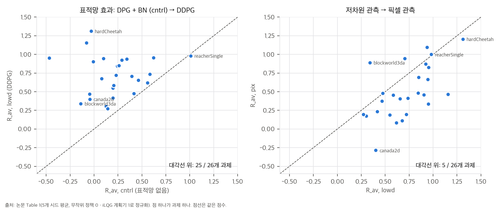
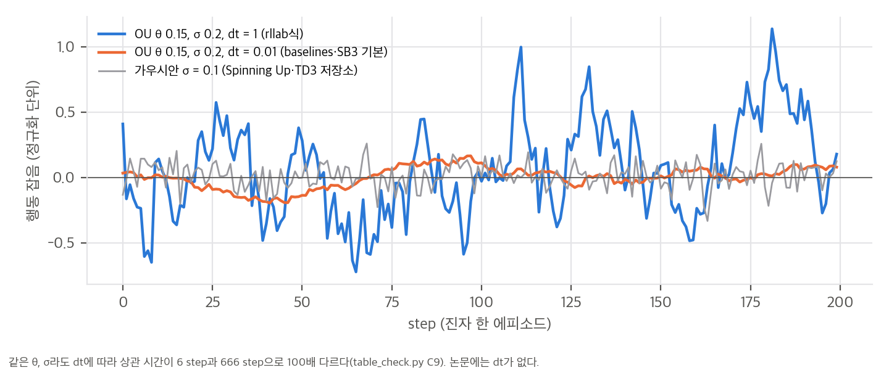
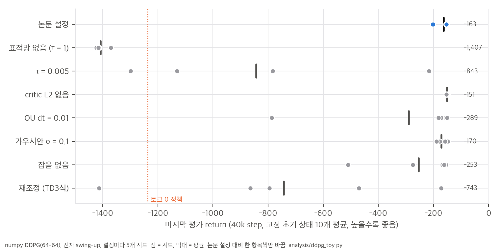
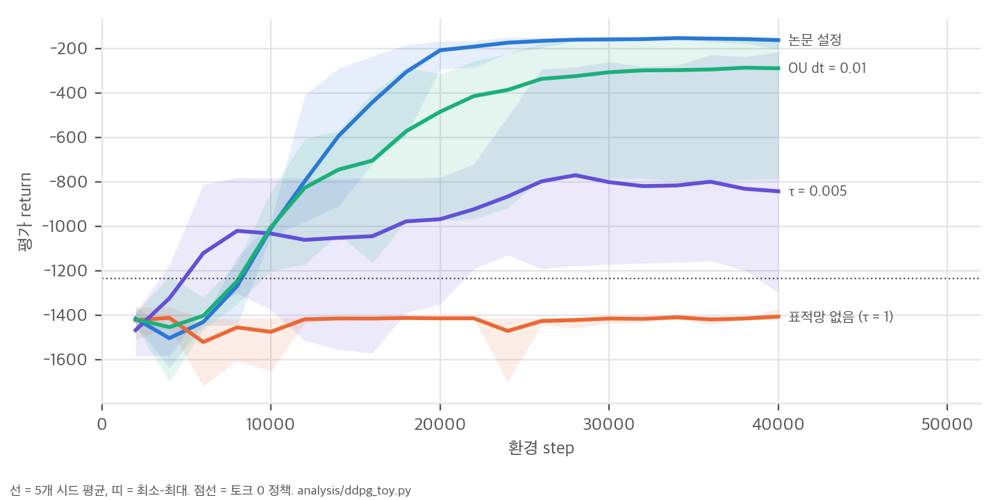

DDPG.py도 main.py로 돌리면 τ 0.005, 배치 256이 된다.cntrl이 추가되었습니다. 하이퍼파라미터와 DDPG 수치는 같습니다.02 §4에 정리했습니다.한 줄 요약: DQN을 성공시킨 두 장치(재생 버퍼, 표적망)를 결정적 정책 경사(DPG) actor-critic에 옮기고 배치 정규화를 더해, 연속 행동 공간에서 신경망 정책을 안정적으로 학습했습니다. 하이퍼파라미터 하나로 20개 넘는 물리 과제를 저차원 관측과 픽셀 모두에서 풀었다고 보고합니다.
논문이 내세우는 주장은 네 가지입니다.
정책이 결정적 μ(s)이면 Bellman 식의 다음 행동 기댓값이 사라집니다.
Q^μ(s_t, a_t) = E_{r_t, s_{t+1} ~ E} [ r(s_t, a_t) + γ Q^μ(s_{t+1}, μ(s_{t+1})) ] (Eq. 3)
기댓값이 환경에만 걸리므로, 다른 행동 정책 β가 모은 전이로 Q^μ를 off-policy 학습할 수 있습니다. critic은 TD 손실 L = E[(Q(s,a|θ^Q) − y)²], y = r + γ Q(s', μ(s'))로 학습합니다(Eq. 4–5).
연속 공간에서는 매 step argmax_a Q를 풀 수 없으므로 actor μ(s|θ^μ)를 따로 둡니다. 시작 분포 기준 return J를 actor 파라미터로 미분하고 연쇄 법칙을 쓰면 다음과 같습니다.
∇_{θ^μ} J ≈ E_{s ~ ρ^β} [ ∇_a Q(s, a | θ^Q) |_{a = μ(s)} · ∇_{θ^μ} μ(s | θ^μ) ] (Eq. 6)
Silver et al. (2014)은 이것이 정책 성능의 경사임을 증명했습니다(on-policy 분포 기준). 이 논문은 각주 2에서 상태 방문 분포의 할인을 무시했다고 밝힙니다. 행동 분포 ρ^β에서 기댓값을 취하는 점도 엄밀한 경사가 아닌 근사입니다(03 §1).
| 장치 | 논문의 동기 | 방식 |
|---|---|---|
| 재생 버퍼 | 연속 탐색으로 모은 표본은 i.i.d.가 아니고, 하드웨어 효율에는 minibatch가 필요 | 크기 10⁶, 가득 차면 오래된 것부터 버림, 매 step 균등 표본 |
| soft 표적망 | 업데이트하는 Q가 표적 y 계산에도 쓰여 발산하기 쉬움 | actor와 critic의 복사본을 두고 θ' ← τθ + (1−τ)θ', τ = 0.001. 두 표적망이 모두 있어야 critic이 발산하지 않았다고 보고 |
| 배치 정규화 | 관측 성분마다 단위(위치, 속도)와 범위가 달라 과제 간 하이퍼파라미터 공유가 어려움 | 상태 입력, μ의 모든 층, 행동이 합류하기 전 Q의 모든 층에 적용 |
| OU 탐색 잡음 | 관성이 있는 물리계에서 시간 상관 탐색이 효율적 | μ'(s) = μ(s) + N, N은 Ornstein–Uhlenbeck 과정(θ = 0.15, σ = 0.2) |
Algorithm 1은 매 환경 step마다 critic과 actor를 한 번씩 업데이트하고 두 표적망을 soft update합니다. 에피소드마다 탐색 과정 N을 새로 시작합니다.
| 항목 | 저차원 관측 | 픽셀 관측 |
|---|---|---|
| 구조 | 은닉 400 → 300, ReLU, actor 출력 tanh. 행동은 Q의 두 번째 은닉층에서 합류 | 합성곱 3층(필터 32, pooling 없음) + 완전연결 200 × 2. 행동은 완전연결층에서 합류 |
| 파라미터 수 | "약 13만" | "약 43만" |
| 마지막 층 초기화 | U(−3×10⁻³, 3×10⁻³) | "[3×10⁻⁴, 3×10⁻⁴]" (음수 부호가 빠진 오타로 보임) |
| 나머지 초기화 | U(−1/√f, 1/√f), f = fan-in | 같음 |
| 최적화 | Adam, actor 10⁻⁴, critic 10⁻³, critic L2 weight decay 10⁻², γ = 0.99, τ = 0.001 | 같음 |
| minibatch | 64 | 16 |
| 재생 버퍼 | 10⁶ | 10⁶ |
| 입력 | 관절각, 위치 등 | 64 × 64 RGB, 행동 반복 3번 → 9채널, [0, 1] 정규화 |
빠진 정보도 있습니다. 합성곱의 커널 크기와 stride, OU 과정의 시간 간격 dt, 학습 시작 전 무작위 탐색 여부, 에피소드 길이와 시간 제한 처리, 평가 주기와 평가 에피소드 수가 없습니다(04 §2).
04 C5). cheetah를 빼면 행동은 관절 토크입니다.재계산은 04 §3과 analysis/table_check.py에 있습니다.
| 열 | 26개 과제 평균 | 중앙값 | 최소–최대 | 계획기(1)를 넘은 과제 수 |
|---|---|---|---|---|
| R_av, lowd (DDPG, 저차원) | 0.718 | 0.712 | 0.272–1.311 | 2 |
| R_best, lowd | 1.078 | 0.992 | 0.705–1.990 | 10 |
| R_av, pix (DDPG, 픽셀) | 0.498 | 0.455 | −0.285–1.204 | 2 |
| R_best, pix | 0.932 | 0.923 | 0.119–2.225 | 8 |
| R_av, cntrl (원래 DPG + 버퍼 + BN) | 0.217 | 0.201 | −0.468–1.010 | 1 |

우리 분석: Table 1을 과제 단위로 비교. 왼쪽 표적망 효과(cntrl → lowd), 오른쪽 저차원 → 픽셀.
해석:
03 §4). 예를 들어 canada는 0.80 이상, walker2d는 0.49 이상, hardCheetah는 0.38 이상입니다. "robustly solves"는 평균보다 최고 시드에 가까운 표현입니다. 다만 R_best가 학습 중 최고 체크포인트를 뜻한다면 이 하한은 성립하지 않으며, 논문만으로는 어느 쪽인지 알 수 없습니다.Fig. 2는 10개 과제에서 네 변형의 학습 곡선을 보입니다: DPG + BN(연회색), + 표적망(진회색), + 표적망 + BN(초록), + 표적망, 픽셀(파랑).
학습 후 Q 추정값과 테스트 에피소드의 실제 return을 비교했습니다. 진자와 cartpole은 대각선 근처이고, cheetah는 추정이 실제보다 크게 위에 있습니다(과대추정). 본문은 "단순 과제에서는 체계적 편향 없이 정확하다"고 해석합니다. 우리 진자 toy에서는 잘 풀린 설정의 시드 15개 중 13개가 과대추정이었고 평균 +6.7%였습니다(03 §5). 단순 과제에서도 편향이 0은 아니라는 뜻입니다. 이후 TD3(Fujimoto et al., 2018)가 이 과대추정을 DDPG의 핵심 약점으로 지목했습니다.
비선형 함수 근사 때문에 수렴 보장이 없습니다. 대부분의 모델 없는 방법처럼 학습 에피소드가 많이 필요합니다. 어려운 과제에서는 Q 추정이 부정확합니다.
04 §2). OU 잡음의 dt가 없어서 구현마다 상관 시간이 100배 다릅니다(rllab dt = 1 → 약 6 step, baselines·SB3 dt = 0.01 → 약 666 step). 픽셀 망은 커널과 stride가 없고, 세 층이 같은 설정이라고 가정하면 "43만 파라미터"를 7% 이내로 맞출 수 없습니다(04 C7). 시간 제한 종료 처리, 무작위 시작 step, 평가 방식도 없습니다.04 C8). DQN의 5천만은 게임 프레임이고, DQN은 4프레임마다 행동하므로 행동 step으로는 1,250만입니다. 같은 단위로 비교하면 약 5배입니다(DQN 수치는 내 사전 지식이라 원문 확인이 필요합니다).스크립트는 세 개입니다.
analysis/table_check.py: 표·부록 수치 재계산 → table_check_results.jsonanalysis/ddpg_toy.py: numpy로 구현한 DDPG를 진자 swing-up에서 실행 → ddpg_toy_results.jsonanalysis/plot_figures.py: 그림과 toy 통계 → toy_stats_results.jsontoy의 수동 역전파는 중앙 차분과 비교해 최대 상대 오차 1×10⁻⁷로 확인했습니다.
off-policy 목적함수를 행동 분포 ρ^β 위에서 정의하면 J_β(μ) = E_{s~ρ^β}[Q^μ(s, μ(s))]입니다. 이를 미분하면 두 항이 나옵니다.
∇_θ J_β = E_{s~ρ^β} [ ∇_θ μ(s) · ∇_a Q^μ(s, a)|_{a=μ(s)} ] + E_{s~ρ^β} [ ∇_θ Q^μ(s, a)|_{a=μ(s)} ]
└──── Eq. 6 ────┘ └─ 정책이 바뀌면 Q^μ 자체가 바뀌는 항 (버림) ─┘
Eq. 6은 두 번째 항을 버린 근사입니다. Silver et al.(2014)의 off-policy 결정적 actor-critic도 같은 근사를 씁니다. 정리가 정확히 성립하는 것은 on-policy 할인 방문 분포 ρ^μ에서인데, DDPG는 재생 버퍼의 분포에서 기댓값을 취하고 각주 2처럼 할인도 무시합니다. 버퍼가 크고 정책이 빨리 바뀔수록 ρ^β와 ρ^μ의 차이가 커집니다. 따라서 "버퍼가 클수록 좋다"는 데이터 효율과, 경사의 편향 사이에 맞교환이 있습니다. 논문은 버퍼 크기를 10⁶ 하나만 씁니다.
해석하면 Eq. 6은 "현재 critic이 보기에 Q가 커지는 방향으로 행동을 민다"는 정책 개선 단계입니다. critic이 틀리면 actor도 그대로 따라갑니다. 과대추정(§5)이 정책 품질로 바로 이어지는 이유입니다.
θ' ← τθ + (1−τ)θ'을 펼치면 θ'k = Σ_j τ(1−τ)^j θ{k−j}이므로, 표적망은 최근 파라미터의 지수이동평균입니다. 반감기는 ln 0.5 / ln(1−τ) 업데이트입니다.
| τ | 반감기 (업데이트) | 쓰는 곳 |
|---|---|---|
| 0.001 | 693 | 논문, rllab, TD3 저장소 DDPG.py 클래스 기본값 |
| 0.005 | 138 | SB3, Spinning Up(polyak 0.995), TD3 저장소 main.py |
| 0.01 | 69 | OpenAI baselines learn(), FlashDexRetarget의 FlashSAC |
| 1 | 0 (표적망 없음) | 원래 DPG |
환경 step마다 업데이트가 한 번이면, 논문 설정의 표적은 약 700 step 전 파라미터에 가장 큰 무게를 둡니다. 진자 3.5 에피소드 분량입니다. 업데이트-대-데이터 비율(UTD)을 바꾸면 같은 τ라도 환경 step 기준 지연이 달라집니다. FlashSAC는 환경 step당 업데이트 2번이라 τ = 0.01이 환경 step 기준 반감기 약 35입니다.
Euler 이산화 x' = x − θx·dt + σ√dt·ε의 성질은 다음과 같습니다(table_check.py C9).
lag-1 자기상관 ρ = 1 − θ·dt, 정상 분산 = σ²·dt / (1 − ρ²) = σ² / (2θ − θ²·dt)
| dt | 정상 표준편차 | lag-1 자기상관 | 상관 시간 (1/e) | 쓰는 곳 |
|---|---|---|---|---|
| 1 | 0.380 | 0.850 | 6 step | rllab (σ 0.3 기본) |
| 0.1 | 0.367 | 0.985 | 66 step | — |
| 0.01 | 0.365 | 0.9985 | 666 step | OpenAI baselines, SB3 기본 |
정상 표준편차는 거의 같지만 상관 시간이 100배 다릅니다. 또 Algorithm 1처럼 에피소드마다 과정을 0에서 다시 시작하면, dt = 0.01에서는 200 step 안에 정상 상태에 닿지 못합니다. step t의 표준편차가 약 σ√(dt·t)라서 t = 200에서도 0.28이고, 초반 수십 step은 거의 0입니다. 즉 "OU(0.15, 0.2)"라는 같은 이름으로 한쪽은 빠르게 흔들리는 잡음을, 다른 쪽은 천천히 떠도는 편향을 쓰게 됩니다(그림 ou_noise.png).

5개 값의 평균이 m이고 최댓값이 M이면, 표본 표준편차가 가장 작아지는 경우는 한 값이 M이고 나머지 넷이 m − (M−m)/4로 같을 때입니다. 이때 편차 제곱합은 (M−m)²·(1 + 4/16) = 1.25(M−m)²이므로 다음이 성립합니다.
s ≥ sqrt(1.25 / 4) · (M − m) ≈ 0.559 · (R_best − R_av)
저차원 DDPG에 적용하면 canada 0.80, walker2d 0.49, hardCheetah 0.38, canada2d 0.32 이상입니다. 26개 과제의 중앙값은 0.17입니다. 정규화 점수 범위(0–1)에 비하면 큰 퍼짐입니다. 단, 이 하한은 R_best가 R_av를 만든 같은 5개 최종 점수 중 최댓값일 때만 성립합니다. 논문의 "best observed"가 학습 중 최고 체크포인트라면 하한이 아닙니다.
설정: gym Pendulum-v1과 같은 동역학(200 step, 토크 ±2)에서 실행했습니다. 구조와 하이퍼파라미터는 논문 부록을 따랐습니다: ReLU, tanh 출력, 행동은 critic 두 번째 층에 합류, 마지막 층 U(±3e-3), Adam 10⁻⁴/10⁻³, critic L2 10⁻², γ = 0.99, 배치 64. 다만 폭은 64-64로 줄였고 배치 정규화는 넣지 않았습니다. 40,000 step, 시드 5개이고, 논문 설정에서 한 항목씩만 바꿨습니다. 평가는 고정 초기 상태 10개에서 결정적 정책의 return 평균이고, 토크 0 정책은 −1,236입니다.

| 설정 | 최종 return 평균 | −250을 넘은 시드 | 논문 설정 대비 (Mann–Whitney p) |
|---|---|---|---|
| 논문 설정 (τ 0.001, OU dt 1, L2 1e-2) | −163 | 5 / 5 | — |
| 표적망 없음 (τ = 1) | −1,407 | 0 / 5 | 0.008 |
| τ = 0.005 | −843 | 1 / 5 | 0.008 |
| critic L2 없음 | −151 | 5 / 5 | 0.14 |
| OU dt = 0.01 | −289 | 4 / 5 | 0.42 |
| 가우시안 σ = 0.1 | −170 | 5 / 5 | 0.55 |
| 잡음 없음 | −253 | 3 / 5 | 0.07 |
| 재조정 (lr 3e-4 둘 다, 배치 256, τ 0.005, 가우시안 0.1, L2 0) | −743 | 1 / 5 | 0.016 |

해석:
Q 추정 편향 (Fig. 3 주장 확인): 학습 뒤 Q(s₀, μ(s₀))를 같은 초기 상태에서 1,000 step 굴린 실제 할인 return과 비교했습니다.
toy의 한계: 망이 작고(64-64), BN이 없고, 과제가 하나이며, 시드가 5개입니다. 결론은 "이 설정에서의 경향"으로만 읽어야 합니다. 실행 시간은 다른 작업과 CPU를 나눠 써서 70분이 걸렸습니다. 단독으로 실행하면 몇 분 수준으로 추정합니다(3k step 실측 0.8초에서 환산하면 시드 하나 40k step에 약 15–20초).
400-300 구조에 Table 2의 관측·행동 차원을 넣으면, actor는 122,201–164,209개, critic은 122,501–164,501개입니다(cheetah: actor 129,306, critic 129,601). "약 13만"은 두 망의 합이 아니라 각 망의 크기입니다.
픽셀 망은 커널과 stride가 적혀 있지 않습니다. 세 합성곱 층이 같은 커널·stride를 쓴다고 가정하고 k = 2–8, stride 1–4, valid/same padding을 모두 넣어 봤습니다. 가장 가까운 설정(k 2, stride 2)도 46만 개로 43만에서 7% 벗어납니다. 층마다 설정이 달랐을 것으로 보이며, 논문만으로는 픽셀 망을 복원할 수 없습니다.
code/, .gitignore).
DLR-RM/stable-baselines3 @ 0cdcd20: ddpg/ddpg.py, td3/td3.py, td3/policies.py, common/noise.pyopenai/spinningup @ 038665d: spinup/algos/pytorch/ddpg/{ddpg,core}.pysfujim/TD3 @ 34770cc: DDPG.py, OurDDPG.py, main.py, utils.pyopenai/baselines @ ea25b9e: baselines/ddpg/{ddpg,ddpg_learner,models,noise,memory}.py, common/models.pyrll/rllab @ ba78e4c의 exploration_strategies/ou_strategy.py, algos/ddpg.py✅ 논문과 같음, ⚠️ 부분적으로 다름, ❌ 다름
| 항목 | 논문 (부록 7절) | sfujim/TD3 DDPG.py |
SB3 DDPG 기본값 |
Spinning Up ddpg 기본값 |
OpenAI baselines ddpg.learn 기본값 |
|---|---|---|---|---|---|
| 은닉층 | 400–300 ReLU | ✅ 400–300 ReLU | ✅ 400–300 ReLU | ❌ 256–256 ReLU | ❌ mlp 빌더 기본 2×64 tanh |
| critic의 행동 합류 위치 | 두 번째 은닉층 | ✅ 두 번째 층 | ❌ 입력층 | ❌ 입력층 | ❌ 입력층 |
| 배치 정규화 | 상태 입력, μ 전 층, Q의 행동 합류 전 층 | ❌ 없음 | ❌ 없음 | ❌ 없음 | ⚠️ 없음. 대신 관측 running 정규화(기본 켬), layer norm 선택 |
| 마지막 층 초기화 | U(±3×10⁻³) | ❌ PyTorch 기본 | ❌ PyTorch 기본 | ❌ PyTorch 기본 | ✅ U(±3×10⁻³) |
| actor / critic 학습률 | 10⁻⁴ / 10⁻³ | ✅ 10⁻⁴ / 10⁻³ | ❌ 10⁻³ / 10⁻³ | ❌ 10⁻³ / 10⁻³ | ✅ 10⁻⁴ / 10⁻³ |
| critic L2 | 10⁻² | ⚠️ Adam weight_decay 10⁻² (bias 포함) |
❌ 없음 | ❌ 없음 | ✅ 10⁻² (은닉 가중치만) |
| τ | 0.001 | ⚠️ 클래스 0.001, main.py 실행 시 0.005 |
❌ 0.005 | ❌ 0.005 (polyak 0.995) | ❌ 0.01 |
| minibatch | 64 | ⚠️ 클래스 64, main.py 실행 시 256 |
❌ 256 | ❌ 100 | ✅ 64 |
| 재생 버퍼 | 10⁶ | ✅ | ✅ | ✅ | ✅ |
| γ | 0.99 | ✅ | ✅ | ✅ | ✅ |
| 탐색 잡음 | OU θ 0.15, σ 0.2 (dt 없음) | ❌ 가우시안 0.1 | ❌ 기본 없음. OU를 주면 dt 0.01 | ❌ 가우시안 0.1 | ❌ 파라미터 공간 잡음 0.2. OU는 dt 0.01 |
| 학습 전 무작위 행동 | 언급 없음 | 25,000 step 균등 무작위 | 100 step 후 학습 시작 | 10,000 step 균등 무작위 | 없음 |
| 업데이트 비율 | 환경 step당 1번 | 1 | 1 | 50 step마다 50번 (= 1) | 100 step 수집마다 50번 (= 0.5) |
| 시간 제한 종료 | 언급 없음 | 시간 제한이면 bootstrap | 버퍼 옵션 | 시간 제한이면 bootstrap | 환경의 done을 그대로 저장 (시간 제한도 종료로 취급) |
| # | 내용 | 영향 |
|---|---|---|
| D1 | 배치 정규화가 주요 구현에서 모두 빠졌습니다. 논문은 관측 단위 차이를 해결하는 핵심 장치로 소개했지만, SB3·Spinning Up·TD3 저장소에는 없고, baselines는 관측 running 정규화로 대신합니다. | 논문 Fig. 2에서도 표적망만 쓴 변형과 BN까지 쓴 변형이 여러 과제에서 겹칩니다(01 §3.3). 오늘날 DDPG는 사실상 "BN 없는 DDPG"입니다. 표적망 대신 정규화로 안정화하려는 CrossQ 계열이 이 질문을 다시 다룹니다. |
| D2 | critic의 행동 합류 위치가 다릅니다. 논문은 두 번째 은닉층에서 합류하고, SB3·Spinning Up·baselines는 입력층에서 상태와 이어 붙입니다. | 행동을 늦게 넣으면 첫 층이 상태 특징만 학습합니다. 논문에서는 BN을 행동 합류 전 층에만 적용하기 위한 구조이기도 합니다. 성능 차이는 보고된 적이 없고 이 분석에서도 측정하지 않았습니다. |
| D3 | TD3 저장소의 "논문 재현" DDPG.py도 기본 실행에서는 논문 값이 아닙니다. main.py가 --tau(기본 0.005)와 --batch_size(기본 256)를 모든 정책에 넘기므로, 클래스 기본값(τ 0.001, 배치 64)이 덮어써집니다. 탐색도 가우시안 0.1이고 처음 25,000 step은 무작위입니다. |
이 저장소로 "원래 DDPG" 결과를 냈다면 실제 설정이 무엇이었는지 확인해야 합니다. 논문 설정을 원하면 --tau 0.001 --batch_size 64를 명시해야 합니다. |
| D4 | SB3 DDPG는 TD3의 특수 경우입니다(policy_delay=1, n_critics=1, target_noise_clip=0). 표적 정책 평활화 잡음은 0.1로 두지만 clip이 0이라 실제로는 0이 됩니다. 기본 action_noise=None이라 사용자가 잡음을 주지 않으면 탐색 잡음 없이 학습합니다. |
비교 실험이 쉬운 대신, 기본값만으로 돌리면 "잡음 없는 DDPG"가 됩니다. toy에서 잡음 없음은 5개 시드 중 2개가 실패했습니다(03 §5). |
| D5 | OU 잡음의 dt가 구현마다 100배 다릅니다. rllab은 dt = 1(dx = θ(μ−x) + σ·ε), baselines와 SB3는 dt = 0.01이 기본입니다. 논문은 θ, σ만 줍니다. | 상관 시간이 6 step과 666 step으로 다르고, 에피소드마다 0에서 다시 시작하면 dt 0.01의 잡음은 초반에 거의 0입니다(03 §3). "OU(0.15, 0.2)를 썼다"는 기술만으로는 탐색을 재현할 수 없습니다. |
| D6 | critic L2의 적용 범위가 다릅니다. TD3 저장소는 Adam weight_decay로 bias까지 감쇠합니다. baselines는 출력층을 뺀 은닉 가중치에만 적용합니다. 논문은 "Q에 L2 10⁻²"라고만 적었습니다. |
toy에서는 L2를 빼도 성능이 비슷하거나 약간 나았습니다(−151 vs −163, p = 0.14). 영향은 작아 보이지만 과제와 보상 크기에 따라 다를 수 있습니다. |
| D7 | 마지막 층 초기화(±3×10⁻³)를 PyTorch 구현들이 따르지 않습니다. baselines만 논문과 같습니다. | 초기 Q와 행동을 0 근처에 두려는 장치입니다. PyTorch 기본 초기화도 출력이 작은 편이라 영향은 크지 않을 것으로 보이지만 측정하지 않았습니다. |
| D8 | 학습 전 무작위 탐색과 시간 제한 처리가 구현마다 다르고, 논문에는 없습니다. TD3 저장소와 Spinning Up은 균등 무작위 행동으로 시작하고 시간 제한 종료에서 bootstrap합니다. | 시간 제한을 종료로 취급하면 마지막 상태의 가치가 0으로 학습되어 편향이 생깁니다. 논문이 어느 쪽인지 알 수 없습니다. |
| D9 | 논문 본문의 사소한 오류: 배치 정규화가 "unit mean and variance"로 정규화한다고 썼습니다(실제로는 평균 0, 분산 1). 픽셀 마지막 층 초기화 범위 "[3×10⁻⁴, 3×10⁻⁴]"는 음수 부호가 빠졌습니다. μ : S ← A는 화살표 방향이 반대입니다. | 재현에는 영향이 없습니다. |
analysis/table_check.py, analysis/ddpg_toy.py)| # | 주장 (출처) | 재계산 | 판정 |
|---|---|---|---|
| C1 | 계획기와 견줄 만한 정책 (Abstract) | 저차원 평균 0.718(중앙값 0.712). 최고 시드 평균 1.078 | 최고 시드 기준 ✅, 평균은 계획기의 약 72% |
| C2 | 일부 시드는 계획기보다 낫다 (Sec. 4) | 평균 기준 2개 과제, 최고 시드 기준 10개(저차원). 픽셀은 2개, 8개 | ✅ ("some replicas"라는 표현과 일치) |
| C3 | 표적망이 결정적 (Fig. 2, Sec. 4) | DDPG > DPG + BN이 평균 기준 25/26 과제, 평균 차이 +0.50, Wilcoxon p = 6×10⁻⁸. toy에서도 표적망 없이는 0/5 | ✅ |
| C3b | 배치 정규화도 필요 (Sec. 4) | Table 1에 "표적망만" 열이 없음. Fig. 2에서 진회색과 초록이 여러 과제에서 겹침 | ⚠️ 근거 약함 |
| C3c | 단순 과제는 픽셀도 저차원만큼 (Sec. 4) | 평균 기준 픽셀 ≥ 저차원은 5/26 과제, 평균 차이 −0.22 | ✅ (일부 과제에 한정) |
| C4 | 같은 설정으로 강건하게 푼다 (Abstract, Sec. 6) | 시드 표준편차 하한: canada ≥ 0.80, walker2d ≥ 0.49, 중앙값 0.17 (R_best 정의에 따라 조건부) | ⚠️ 퍼짐이 큼 |
| C5 | 20개 넘는 과제 (Abstract) | Table 2는 32개, Table 1은 26개 + Torcs. 6개 환경은 결과 없음 | ✅ (목록 불일치는 있음) |
| C6 | 저차원 망 약 13만 파라미터 (부록 7절) | actor 122k–164k, critic 123k–165k (cheetah 129,306 / 129,601) | ✅ 각 망 기준 |
| C7 | 픽셀 망 약 43만 파라미터 | 세 층이 같은 커널·stride라고 가정하면 가장 가까운 설정이 46만(+7%) | ⚠️ 구조 복원 불가 |
| C8 | DQN보다 20배 적은 step (Sec. 6) | 5천만 / 250만 = 20은 프레임 대 행동 step. 행동 step끼리 비교하면 5배, 픽셀 과제의 시뮬레이션 프레임 기준 6.7배 | ⚠️ 단위 혼합 (DQN 수치는 사전 지식) |
| C9 | 단순 과제에서 Q 추정에 체계적 편향 없음 (Fig. 3) | toy 진자: 잘 풀린 설정 15개 시드 중 13개 과대추정, 평균 +6.7% | ⚠️ toy에서는 재현 안 됨 |
| C10 | 하나의 하이퍼파라미터 집합 (Sec. 1) | Torcs는 탐색 잡음을 바꿨다고 본문에 적혀 있음. 픽셀은 배치 16 | ⚠️ 예외 있음 |
불가능합니다. 공식 코드가 없고, 32개 MuJoCo 과제와 Torcs 설정, 정규화 기준인 iLQG 계획기도 공개되지 않았습니다. Table 1의 0과 1이 모두 비공개 구현에 묶여 있습니다. 픽셀 망 구조(커널, stride)와 OU dt도 빠져 있습니다.
| 경로 | 판단 | 필요한 것 |
|---|---|---|
| numpy toy (진자) | ✅ 완료 | 추가 설치 없음. ddpg_toy.py |
| SB3 DDPG로 gymnasium Pendulum, MuJoCo 과제(HalfCheetah, Hopper, Walker2d 등) | 이 맥에서 가능 (설치 승인 필요) | torch, stable-baselines3, gymnasium[mujoco]. MuJoCo와 소형 MLP는 macOS CPU에서 돌아갑니다. 100만 step이면 과제당 수 시간 예상(미측정) |
| 논문 설정 그대로의 DDPG(BN, 두 번째 층 합류, OU, L2) | 쉬움 | 약 150줄. TD3 저장소 DDPG.py에 BN과 OU를 더하는 정도 |
| 픽셀 입력 DDPG (dm_control 과제) | 조건부 | 렌더링과 CNN 학습이 필요합니다. Apple GPU(MPS)를 쓸 수 있지만 macOS의 dm_control 오프스크린 렌더링은 확인하지 않았습니다 |
| CUDA 전용 요소 | 해당 없음 | DDPG 자체는 CUDA가 필요하지 않습니다 |
요약: 논문 표를 재현할 수는 없지만, 알고리즘은 짧고 공개 구현이 많아서 직접 쓰거나 재구현하기는 매우 쉽습니다. 실제로 쓸 때는 구현마다 BN, τ, 잡음, 배치, 행동 합류 위치가 논문과 다르다는 점(§1)을 알고 설정을 명시해야 합니다. 저차원 MuJoCo 실험은 이 맥(CPU)에서 할 수 있고, 패키지 설치만 승인받으면 됩니다.
논문 참고문헌은 저자-연도로 표기합니다(이 논문은 번호 인용을 쓰지 않습니다). 후속 연구의 arXiv ID는 TD3(1802.09477, FlashSAC 코드 주석에서 확인)만 확인했고, 나머지는 내 사전 지식이라 게시 전에 확인해야 합니다.
[연속 행동 actor-critic]
Prokhorov & Wunsch 1997 (adaptive critic designs)
NFQCA (Hafner & Riedmiller 2011) 신경망 actor-critic, 배치 학습
DPG (Silver et al. 2014) 결정적 정책 경사 정리, 선형·타일 코딩 근사
SVG(0) (Heess et al. 2015) Q-critic + 확률적 정책 (DPG는 그 결정적 극한)
│
[DQN의 안정화 장치] DQN (Mnih et al. 2013, 2015): 재생 버퍼 + 표적망
│
★ DDPG (Lillicrap et al. 2016) = DPG + 재생 버퍼 + soft 표적망 + 배치 정규화 + OU 잡음
│
├─ TD3 (Fujimoto et al. 2018, arXiv:1802.09477) 과대추정 대응: twin Q의 최솟값, 표적 정책 평활화, actor 지연 업데이트
├─ SAC (Haarnoja et al. 2018) 확률적 정책 + 최대 엔트로피, 자동 온도 조절
├─ D4PG (Barth-Maron et al. 2018) 분포형 critic, n-step, 분산 수집
├─ 파라미터 공간 잡음 (Plappert et al. 2018) OpenAI baselines DDPG의 기본 탐색
├─ CrossQ (Bhatt et al. 2024) critic에 batch renorm, 표적망 제거 → DDPG의 BN 주장을 다시 꺼냄
└─ 대규모 off-policy: FlashSAC (Kim et al. 2026) 범주형 critic, twin-Q 앙상블, 큰 버퍼·critic (이 저장소 flashdexretarget/)
DDPG의 위치: 알고리즘 자체(Eq. 6)는 DPG와 같습니다. 기여는 "신경망으로 키울 때 무엇이 필요한가"를 보인 공학적 조합과 대규모 평가입니다. 이후 계보는 대부분 DDPG의 약점을 고치는 방향입니다. TD3는 과대추정, SAC는 탐색과 민감도, D4PG는 분포와 규모, CrossQ는 표적망 대신 정규화를 다룹니다.
| 구성 요소 | 출처 | DDPG에서의 쓰임 |
|---|---|---|
| 결정적 정책 경사 (Eq. 6) | Silver et al. 2014 | actor 업데이트 |
| off-policy Q 학습 (Eq. 4–5) | Watkins & Dayan 1992 | critic 업데이트 |
| 재생 버퍼, 표적망 | Mnih et al. 2013, 2015 (DQN) | 버퍼 10⁶. 표적망은 hard copy 대신 soft update(τ = 0.001) |
| 배치 정규화 | Ioffe & Szegedy 2015 | 관측 단위 차이 해소 |
| 자기상관 탐색 잡음 | Uhlenbeck & Ornstein 1930, Wawrzyński 2015 | OU 과정 θ = 0.15, σ = 0.2 |
| Adam | Kingma & Ba 2014 | actor 10⁻⁴, critic 10⁻³ |
| ReLU | Glorot et al. 2011 | 은닉층 |
| 비교 기준 계획기 | iLQG (Todorov & Li 2005), MPC (Tassa et al. 2012) | 정규화 점수 1 |
| 재생 버퍼 actor-critic 선행 | Wawrzyński 2009, Wawrzyński & Tanwani 2013 | cheetah 환경 출처이기도 함 |
| 논문 | 관계 |
|---|---|
FlashDexRetarget (flashdexretarget/) |
FlashSAC 학습기는 DDPG 계보의 직계 후손입니다. 재생 버퍼, soft 표적망(τ = 0.01), 결정적 경사를 대신하는 재매개화 경사, TD3의 twin-Q(코드 주석에 arXiv:1802.09477 인용)를 씁니다. 그 논문의 Fig. 4(d)에서 버퍼(10M → 50M)와 critic 폭(256 → 1024)이 성능 차이의 대부분을 만든 결과는, DDPG가 처음 보인 "off-policy + 재생 버퍼"의 데이터 효율이 규모를 키워도 유지된다는 사례입니다. |
DexScrew (dexscrew/) |
PPO(on-policy)로 손가락 기술을 학습합니다. DDPG 논문은 TRPO 같은 on-policy 방법이 "데이터 효율이 상당히 낮아 보인다"고 했고(Sec. 5), FlashDexRetarget은 다중 레퍼런스 설정에서 같은 스텝 예산이면 PPO가 거의 0이라는 결과를 냈습니다. 한 과제만 학습하는 DexScrew 설정에 바로 적용되지는 않습니다. |
DeepMind는 이 논문의 코드를 공개하지 않았습니다. 아래 표는 2026-10-28에 gh api로 확인한 값입니다. "대조"는 이 분석의 04에서 실제로 코드를 읽어 논문과 비교한 구현입니다.
| 저장소 | 공식 여부 | 프레임워크 | 라이선스 | 별 | 마지막 push | 확인 커밋 | DDPG 파일 | 대조 |
|---|---|---|---|---|---|---|---|---|
| DLR-RM/stable-baselines3 | 비공식 (유지보수 활발) | PyTorch | MIT | 13,940 | 2026-10-26 | 0cdcd20 |
stable_baselines3/ddpg/ddpg.py (TD3의 하위 클래스) |
✅ |
| openai/spinningup | 비공식 (교육용) | PyTorch / TF1 | MIT | 12,019 | 2024-08-05 | 038665d |
spinup/algos/pytorch/ddpg/ddpg.py |
✅ |
| sfujim/TD3 | TD3 저자 공식, DDPG는 재구현 | PyTorch | MIT | 2,118 | 2023-07-14 | 34770cc |
DDPG.py(논문 재현), OurDDPG.py(재조정) |
✅ |
| openai/baselines | 비공식 (유지보수 중단) | TF1 | MIT | 16,773 | 2024-08-01 | ea25b9e |
baselines/ddpg/ |
✅ |
| rll/rllab | 비공식, 벤치마크 논문용 (유지보수 중단) | Theano | 라이선스 파일 비표준 | 3,079 | 2023-06-10 | ba78e4c |
rllab/algos/ddpg.py, exploration_strategies/ou_strategy.py |
OU·기본값만 |
| vwxyzjn/cleanrl | 비공식 (단일 파일) | PyTorch / JAX | 비표준 표기 | 10,611 | 2026-04-20 | fe8d8a0 |
cleanrl/ddpg_continuous_action.py |
목록만 |
| google-deepmind/acme | DeepMind 라이브러리 (이 논문 코드는 아님) | TF / JAX | Apache-2.0 | 4,082 | 2026-10-23 | 2e09e3d |
acme/agents/tf/ddpg/ |
목록만 |
| tensorflow/agents | Google 라이브러리 | TF2 | Apache-2.0 | 3,031 | 2026-01-16 | eb24cf5 |
tf_agents/agents/ddpg/ |
목록만 |
| thu-ml/tianshou | 비공식 | PyTorch | MIT | 11,042 | 2026-04-03 | f240205 |
tianshou/algorithm/modelfree/ddpg.py |
목록만 |
| rlworkgroup/garage | 비공식, rllab 후속 (유지보수 중단) | TF / PyTorch | MIT | 2,130 | 2023-05-04 | 2d59480 |
src/garage/torch/algos/ddpg.py |
목록만 |
| pfnet/pfrl | 비공식 | PyTorch | MIT | 1,277 | 2026-03-02 | 3578e33 |
pfrl/agents/ddpg.py |
목록만 |
| keras-rl/keras-rl | 비공식 (유지보수 중단) | Keras | MIT | 5,548 | 2023-09-17 | 216c314 |
rl/agents/ddpg.py |
목록만 |
고르는 기준: 지금 실험에 쓸 기준선이라면 SB3입니다. 유지보수가 활발하고, DDPG가 TD3의 특수 경우로 구현되어 비교 실험이 쉽습니다. 논문 설정에 가장 가까운 코드를 보려면 **sfujim/TD3의 DDPG.py**입니다. 다만 저장소의 main.py로 실행하면 τ와 배치가 TD3 기본값으로 덮어써집니다(04 D3). 알고리즘을 공부하려면 Spinning Up 문서와 코드가 가장 읽기 쉽습니다. OpenAI baselines와 rllab은 역사적 참고용입니다.
| 주제 | 관련성 | 근거 수준 |
|---|---|---|
| 결정적 정책 경사의 off-policy 편향 (Degris et al. 2012의 off-policy actor-critic 분석 등) | Eq. 6은 행동 분포 ρ^β에서 기댓값을 취하므로 엄밀한 경사가 아닙니다. 버퍼가 클수록 이 편향이 커질 수 있습니다(03 §1). |
내 해석, 서지 확인 필요 |
| Pink noise 탐색 (Eberhard et al., ICLR 2023) | OU(빨간 잡음)와 백색 잡음 사이의 상관 구조를 고르는 문제를 정면으로 다룹니다. OU dt 모호성(04 D5)과 바로 연결됩니다. |
내 사전 지식, 서지 확인 필요 |
| LQR을 이용한 actor-critic 단위 시험 | 선형-이차 문제는 최적 제어기를 알 수 있어서 구현 검증에 쓸 수 있습니다. | 내 해석 |
| HJB 잔차를 쓰는 연속 시간 가치 학습 | critic이 만족해야 하는 Bellman 식의 연속 시간 극한(HJB 편미분방정식)을 PINN식 손실로 넣는 계열입니다. PINN 연구와 이어집니다. | 내 사전 지식, 서지 확인 필요 |
한계: 1절과 5절의 후속 연구 서지는 TD3를 빼면 내 사전 지식에 근거합니다. 블로그나 git에 올리기 전에 원문을 직접 확인해야 합니다.